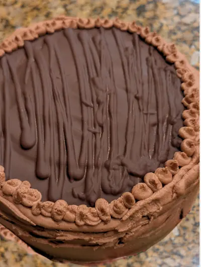

Cake of the Week:
Check Out our Cakes!
We have a variety of flavors and styles to choose from.
We are located in South Jordan, Utah.
Banana Cake

Banana Cake is a moist and delicious cake made with ripe bananas, flour, sugar, eggs, and butter. It is often topped with cream cheese frosting or a simple glaze.
Brownie Biscoff Cake
Brownie Biscoff Cake is a decadent dessert that combines rich chocolate brownies with the unique flavor of Biscoff cookies. It is often layered with Biscoff frosting and topped with crushed cookies.
Chocolate Truffle Cake
Chocolate Truffle Cake is a rich and indulgent dessert made with layers of chocolate cake, chocolate ganache, and truffle filling. It is often garnished with chocolate shavings or fresh berries.
Churro Cake
Churro Cake is a delightful dessert that combines the flavors of churros with a moist cake. It is often topped with cinnamon sugar and served with chocolate or caramel sauce.
Disneyland Chocolate Smash Cake
Disneyland Chocolate Smash Cake is a fun and interactive dessert that features a chocolate cake covered in a hard chocolate shell. When smashed, it reveals a delicious filling of candies or treats inside.
Ultimate Smores Cake
Ultimate Smores Cake is a decadent dessert that combines layers of chocolate cake, graham cracker crumbs, and marshmallow frosting. It is often topped with toasted marshmallows and chocolate drizzle.
Biscoff Bunt Cake
Biscoff Bunt Cake is a moist and flavorful cake made with Biscoff cookies and spices. It is often topped with a Biscoff glaze or frosting.
Dark Chocolate Bunt Cake
Dark Chocolate Bunt Cake is a rich and indulgent dessert made with dark chocolate and cocoa powder. It is often topped with chocolate ganache or a dusting of powdered sugar.
Raspberry Bunt Cake
Raspberry Bunt Cake is a moist and fruity dessert made with fresh raspberries and a light cake batter. It is often topped with raspberry glaze or whipped cream.
Get 10% off your next order
Leave us a review and receive 10% off your next order.
Review FormPlace your order today!
We have a "Cake of the Week" each week. Check our calendar to see which cake is made each week for the current month and next month.
Place your order anytime before Tuesdays and your cake will be ready for pick up on Thursdays.
Order Now